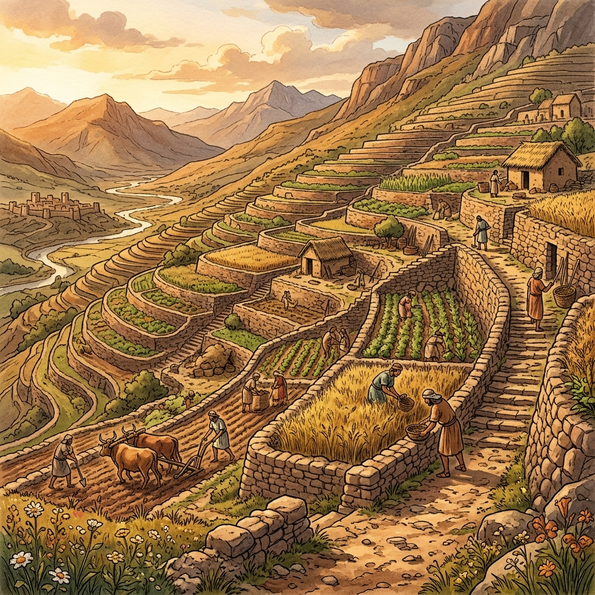

Discover how geography, soil, and climate shaped the agricultural foundations of human civilization.
Explore RegionsLong before the advent of modern machinery, ancient civilizations relied entirely on their surrounding geography to sustain life. The crops they chose to cultivate were not random; they were carefully selected based on regional climate, water availability, and soil composition.
From the fertile floodplains of Mesopotamia to the volcanic ash soils of Mesoamerica, humanity adapted their farming techniques to harmonize with the land. Explore these unique agricultural biomes below.
